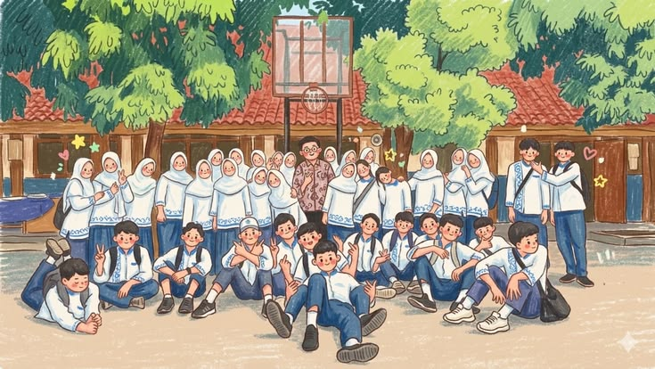

Pengumuman Terbaru
Selamat datang di platform digital resmi OSIS SMU DuMay. Pantau terus informasi kegiatan seru kami di sini!
Kegiatan Terbaru

Upacara dan Kegiatan Sekolah
Informasi kegiatan dan aktivitas terbaru OSIS.
Kontak OSIS
Hubungi pengurus OSIS💬 Aspirasi Siswa
Sampaikan ide, saran, kritik, dan harapanmu untuk kemajuan sekolah kita.
📢 Aspirasi Terbuka
Nama, kelas, dan isi aspirasi yang kamu kirim dapat dibaca oleh seluruh pengunjung. Sampaikan aspirasi dengan sopan dan bertanggung jawab.
Kirim Aspirasi
📋 Aspirasi Siswa
Berikut aspirasi yang telah disampaikan oleh siswa.
Memuat aspirasi siswa...